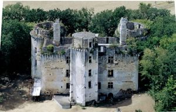
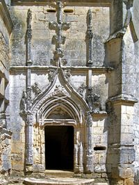
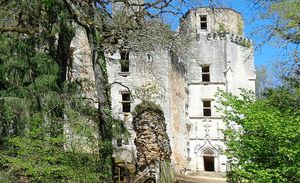
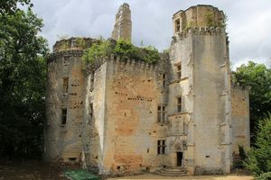
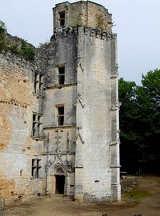
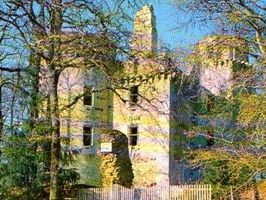
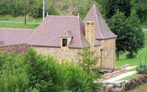
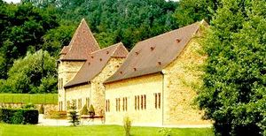

Recensement Jean-Claude Truffet
| Département | 24 — Dordogne |
| Canton | Villefranche du Périgord |
| Commune | Rouffignac st cernin de Reilhac |
| Type d'édifice | Vestiges |
| Période d'origine | XV |
| Coordonnées GPS | 45° 04' 40,9" Nord, 0° 57' 34,7" Est, et Moulin Haut grav 7-8. |








L'HERM en 1561, Anne de la Douze oblige sa fille, Marguerite de Calvimont, dame de l'Herm, à épouser François II d'Aubusson, sieur de Beauregard. Mais ce dernier s'éprend de Marie de Hautefort et a le projet de se débarrasser de sa femme et d'accaparer son héritage, il fait signer à Marguerite de Calvimont un document pour la dépouiller de ses biens et la fait étrangler en 1605. François d'Aubusson se remarie ensuite avec Marie de Hautefort, en 1606, dont il a eu deux enfants, Charles et Françoise. En 1608, Anne de la Douze. François d'Aubusson se livre alors à la justice, il est incarcéré et meurt en 1618. Marie de Hautefort fait assassiner les deux frères de Calvimont de Saint-Martial et obtient la propriété du château. Son fils Charles est assassiné en 1636., Marie de Hautefort se remarie avec Henri Bertrand Raphaël de Beaudet, seigneur du Peuch. Françoise d'Aubusson se marie avec Godefroy de La Roche-Aymon dont elle a une fille, Jeanne-Armande de La Roche Aymon, et meurt en 1641. Godefroy de La Roche-Aymon se remarie en 1642 avec Henriette-Madeleine des Grillets de Brissac. Jeanne-Armande de la Roche-Aymon est mariée en 1660 avec François de Reilhac, comte de Boussac, fils d'Henriette-Madeleine des Grillets. Godefroy de La Roche-Aymon a tué en duel, en 1637, Jean VI de Calvimont de Saint-Martial. Henri-Bertrand de Beaudet, accompagné par son fils Louis, est tué en 1644 dans un traquenard monté par le demi-frère illégitime de sa femme, Charles de Hautefort, et Godefroy de la Roche-Aymon. Ce dernier est aussi tué. Louis de Beaudet est tué le 1er août 1649 par Pierre Babut, premier consul de La Linde. Marie de Hautefort meurt en 1652 légue ses biens à sa petite-fille, Jeanne-Armande de la Roche-Aymon. Le château est racheté en 1682 par Marie de Hautefort (1616-1691), fille de Charles, marquis de Hautefort, surnommée « l'Aurore » par Louis XIII. Le domaine est alors loué à un fermier. Le château est abandonné en 1862.
HERM, ruine du château sur plan quadrangulaire flanqué de trois tours circulaires du XVe siècle, sa construction par jean de Calvimont composé d'un corps de logis rectangulaire flanqué de 2 tours d'angle massives, accosté d'une tour polygonale d'escalier du début du XVIe siècle. Le tout était couronné de mâchicoulis, qui ont depuis disparus. Des fouilles archéologiques récentes ont dévoilé une enceinte circulaire de bâtiments plus anciens, dont les actuels fossés en eau sont un vestige. Aujourdhui, ce site est ouvert à la visite. Il revit grâce à des travaux de protection, des recherches historiques, des pièces de théâtre et des concerts estivaux.
Famille de Jean de Calvimont,
"
A Rouffignac St-Cernin de Reilhac ; Herm, vestiges grav de 1 à 6GPS : 45° 04' 40,9" Nord, 0° 57' 34,7" Est, et Moulin Haut grav 7-8.